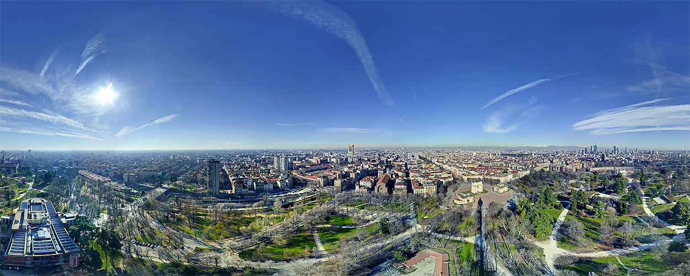

Hello World
Youtube
Вітаю!
Львівянин або гість нашого прекрасного міста Лева. Ви отримали прекрасну можливість познайомитись з найкращими розмовними клубами іноземних мов нашого міста, а саме головне поспілкуватись з носіями мови та провести час в приємній атмосфері. Даний проект створений для можоивості обєднати львів'ян та гостів міста. Тут можна створити свій власний клуб іноземної мови опублікувавши публічно та збиратись в затишних кав'ярнях і кнайпах для дискусій та покращення свої навиків.
Успіхів вам. «Скільки мов ти знаєш – стільки разів ти людина».
Йоганн Вольфганг фон Ґете

Go to form